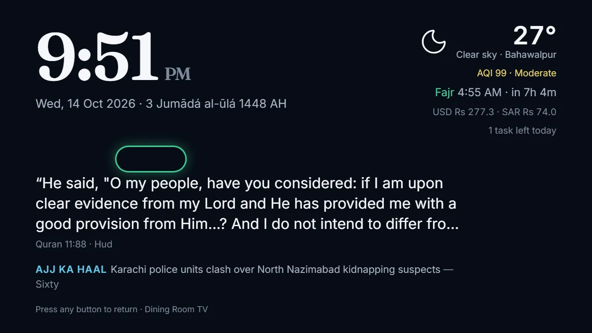

A TV app made for the Chromecast
A light app built for the Chromecast's older browser: it opens instantly, never reloads between screens, and drifts into a calm ambient screen — clock, next prayer, weather, smog, the ayah or sher of the day, and family photos.